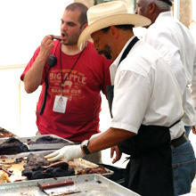
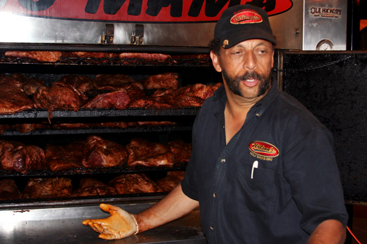

Wilson's
Real Pit Barbeque
Cooked Slow & Ready to Go!

Sign Up !! Join Wilsons Birthday Club , get free Updates and Discount! "We Value Your Privacy"
During the Big Apple BBQ of summer of 2007, it rained for two days straight and we served over 14,000 New Yorkers! I can say that we (all the competing pitmasters) had nothing less than a great time doing what we love, BBQ!!! This year I smoked and served over 2 tons, yes, 2 TONS of Texas Style Beef Brisket and Eastern Carolina-style Coleslaw! For more information, read below!

"Interview with Pitmaster Ed Wilson of Wilson’s BBQ – Fairfield, CT... Which woods do you use? “I like to use shagbark hickory for the bigger cuts of meat like brisket or pork shoulder. A lot of people use oak, but I feel it imparts too much of a smoky taste. For smaller cuts I like to use a milder fruit wood like apple. Seafood is so delicate that anything other than a mild wood would be overpowering.” Philosophy on Rubs: “The central theme of a rub is equal parts sugar, salt and pepper – now, you can make right and left turns off of that.” Philosophy on Sauces: “It’s gotta be fresh, fresh, fresh. We make our sauce from scratch on-site, which most people don’t do. It’s hard to do fresh, but to me it’s worth it.” Preferred Fuel: “I strictly use hardwood lump charcoal.” Ed’s Tips for Chefs Serving Barbecue: “A chef should get a smoker underneath their hood if they want to do real barbecue. In preparing for service, get it all done right before your service. There’s no deterioration of the product when you hold it for 3 hours.” ((Find the rest of the article at... http://www.starchefs.com/features/bbq_tips_2008/index.shtml))

"Don't miss Ed Wilson and Ed Mitchell's hog-chopping performance, where each man smashes a pair of cleavers in a rhythm the Blue Man Group would envy. Wilson’s Barbecue, in Fairfield, Connecticut, is as good a barbecue place as there is in New England, but catch him here because he doesn't make it to New York often enough. " ((Find the rest of the article at... http://nymag.com/daily/food/2008/06/how_to_get_the_most_out_of_the.html))

For the Big Apple BBQ official website, follow this link: http://bigapplebbq.org/